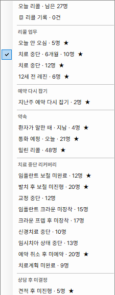

홈 › 리콜 전화 — 오늘 전화할 분과 할 말
리콜 전화 — 오늘 전화할 분과 할 말
다시 오셔야 하는데 예약이 없는 환자분을 골라 카드로 띄웁니다. 왜 전화하는지, 첫마디를 뭐라고 할지 적혀 있고, 통화 결과를 누르고 [메모 저장]을 하면 덴트웹 차트에 저절로 적힙니다.

다섯 단계로 한 분 끝
- 한가할 때 리콜 카드가 뜨면 [전화 · 통화 메모] (지금 못 하면 [보류]).
- 초록 첫마디 상자를 읽으며 전화합니다.
- 통화 결과를 하나 누릅니다: [예약 잡음] · [안 받음] · [나중에 연락] · [원치 않음]
- [메모 저장] — 덴트웹 차트에 저절로 적힙니다.
- 안 받으면 다시 걸 날을 고릅니다(모르면 [자동]).
테마로 묶어서 보기
리콜 목록 위 [테마 ▾]를 누르면 「치료 중단 · 6개월」「12세 전 레진」「임플란트 보철 미완료」「환자가 말한 때」처럼 묶음이 나오고, 묶음마다 지금 챙길 분 수가 붙어 있습니다. ★ 는 먼저 챙길 테마입니다.

「3월에 할게요」 하신 분, 3월에 다시
덴트웹 히든메모의 「내년 3월에 치료 받으러 오신대요」「4월에 다시 연락 주신대요」를 읽어 두었다가 그 달 1일에 리콜 카드로 올려 줍니다. 메모에 오신대요 · 연락 주신대요 · 전화 드리기로처럼 연락·내원 말을 같이 적어 주세요.
「말씀하신 그 달에 먼저 전화드리니 내원이 확실히 늘었어요. 「챙겨 줘서 고맙다」며 환자분들이 많이 좋아하세요.」데스크알리미를 만든 치과 원장